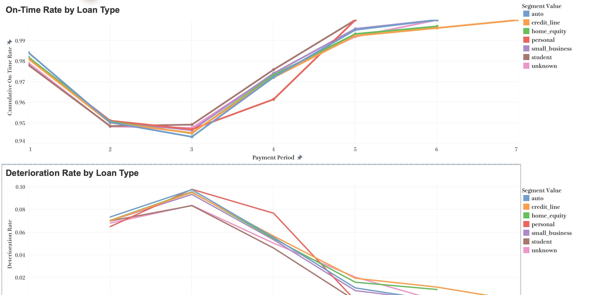
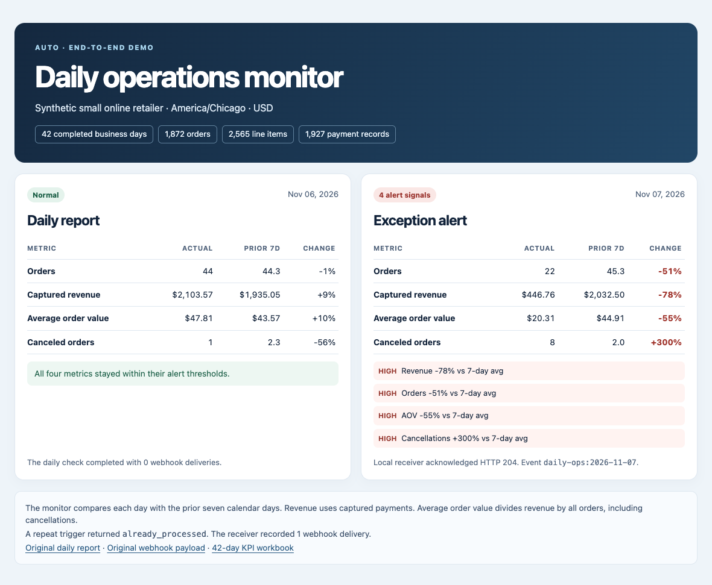

Loan Portfolio Risk Monitor
I removed 12,585 duplicate payment records across seven periods, then used the reconciled data to build two Tableau dashboards and a risk brief.
AI & data, built for real work.
Thinking in systems. Building around people.


I removed 12,585 duplicate payment records across seven periods, then used the reconciled data to build two Tableau dashboards and a risk brief.


A Python monitor and six n8n workflows flag KPI anomalies and track incidents from the first alert through resolution. The demo uses synthetic orders.
I work across AI engineering and data analytics, with a focus on turning complex workflows into reliable systems. I'm currently an AI Engineering Intern at OriLoan Financial Inc.
I work end to end: cleaning the data, modeling the problem, and shipping it as something measurable and dependable. I learn fastest by building, validating against ground truth, and iterating on what the results reveal.
I'm currently open to internship and full-time opportunities where execution and continuous improvement matter.
Have a project in mind? I'd love to hear about it.
Quick answers about my work